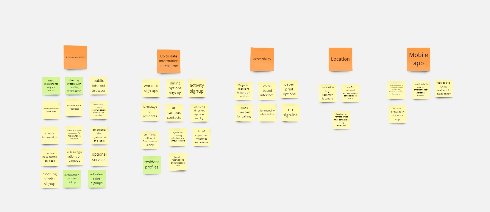

Accessible Kiosk Design for a Local Nursing Home
This project aimed to improve accessibility and communication through an interactive kiosk system for elderly residents at a local nursing home.
Project Goals
- Enhance communication between residents, staff, and maintenance services.
- Ensure ease of use for residents with varying levels of tech proficiency.
- Provide accessibility options including voice control, magnifier features, and real-time updates.
Discovery Phase
We conducted focus group sessions and interviews with residents and staff to identify key features and issues:
- Directory System: Profiles with resident names, contact info, and addresses sorted by first or last names.
- Maintenance Requests: Ability to call or send pre-filled requests to maintenance staff.
- Activity Sign-Ups: Centralized weekly activity and workout schedules.
- Transportation Schedules: Real-time updates for shuttle and bus timings.
- Emergency Features: Quick call option for emergencies, with GPS integration.
Affinity Diagram

Key Accessibility Features
- Voice-Based Interface: Allowing residents to control the kiosk with verbal commands.
- Paper Print Options: Ensure information is still available for residents not comfortable with technology.
- Magnifier Tool: Built-in zoom function for visually impaired users.
- Custom Profiles: Resident-specific accounts for accessing personalized schedules and requests.
Focus Group Insights
Key Takeaways:
- Residents preferred dual access: kiosk in central locations and downloadable apps for personal devices.
- Tech-adverse residents required simple, intuitive navigation and quick options like calling a number.
- Voice-based commands and touch functionality were highlighted for accessibility improvements.
Design Analysis Report
Analyzing existing app systems to identify strengths and weaknesses for the kiosk implementation.
Download Design Analysis Report